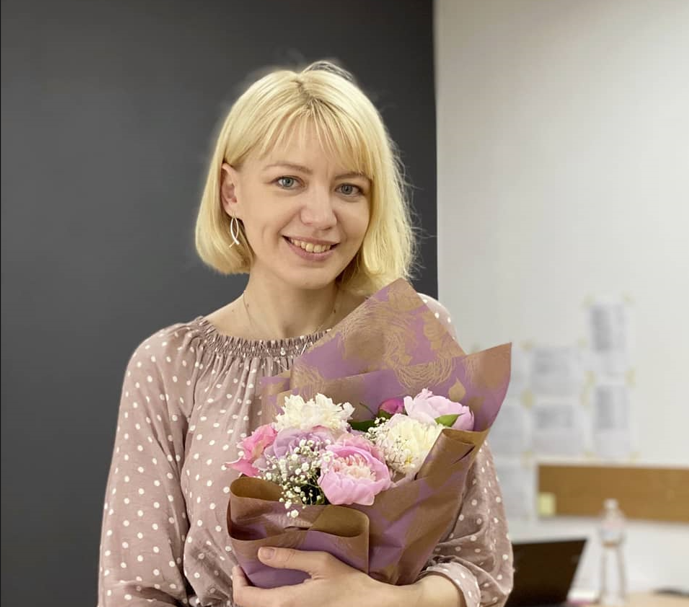

Daria Petryshcheva
Frontent developer - Email marketer - Photographer
Hello, my name is Daria Petryshcheva, I'm 36 years old, I'm from Kyiv, Ukraine.
Now I live in Stadsbygd, Norway. Over the years, I managed to change several
professions and gain experience in various fields of activity. I am a programmer
by profession and worked as a web programmer for 4 years after graduation.
Then i worked as a wedding and portrait photographer for 6 years. Then, for 3
years, i worked in the marketing department for 4 automotive-related
companies - doing viber and email mailings (90% of the time) - content
manager - copywriter. Graduated from “Email Marketing” course from
SendPulse, “Email Marketing” from l-a-b-a.com. Arriving in Norway, in the Indrefosen commune, I went to language practice in IKT. Along with studying the Norwegian language, I studied and practiced website layout - HTML, css, scss,flexbox, js, jquery, BEM methodology, adaptive layout.